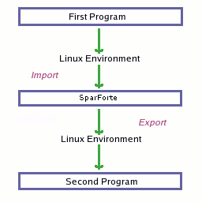

![[SparForte]](art/sparforte.png)
![[Banner]](art/header_cloud.png)
![[Top Main Menu]](art/menu_left.png) |
Intro | Tutorials | Reference | Packages | Examples | Contributors |
| | |||||||||||||||
| ||||||||||||||||
Command Prompt Tutorial 2: Basic Shell CommandsTutorial 1 demonstrated how SparForte can be used to do command line calculations. It introduced the concepts of expressions, types, variables and built-in packages. SparForte can do far more that calculations. It can also run commands. The following tutorial shows how to use SparForte as an operating system shell. A shell is a command prompt from which you can run operating system commands. These commands differ from built-in procedures and functions in that they are standalone programs that exist externally to SparForte (although SparForte also has some built-in commands which behave in an identical way). Shell commands are covered in more detail in the External Commands and Built-in Shell Commands in the Reference section. An example on UNIX-based systems is the ls command which displays a list of the files in the current directory. This is not a SparForte command: it is an external program provided by the operating system. => ls
Example: Running an Operating System Command
If a variable or procedure exists with the same name as the command, the name will be treated as a procedure or variable instead of a command. The rest of this tutorial will assume a UNIX-based operating system like Linux, FreeBSD or Cygwin. The PATH VariableCommands are located using a special variable called PATH. PATH contains a list of directories that will be searched to find a command. => ? PATH
Example: The PATH Variable
In this case, ls in located in the "/bin" directory. If a command is in a directory that is not in the PATH list, the command will not be found. ParametersCommands can be followed by parameters (also called arguments,
options or switches) that change their behaviour.
There are two methods of representing parameters. If
the command is followed by a left parenthesis, the command is executed
using AdaScript arguments (the same as the parameters in the first
tutorial). The arguments are contained by
parentheses, separated by commas, characters are surrounded by single
quotes and strings have double quotes. => date( "--universal" )
Example: Running a Command With AdaScript Parameters
If there are no parentheses, the command will use Bourne shell (POSIX) arguments, the same as the shell that comes standard with most UNIX-based operating systems like Linux. => date --universal
Example: Running a Command With Bourne Parameters
The POSIX arguments are useful for people already familiar with other shells. SparForte implements all of the basic POSIX features including dollar sign expansions, file globbing, and word quoting. The AdaScript format is primarily used for SparForte scripts. However, if you've never used a shell before, you may find this format easier to use because the POSIX arguments follow completely different rules. Shell Word Expansions (Bourne Arguments)Using Bourne shell arguments, dollar sign ($) expansions substitute the value of a SparForte variable into the command. Unlike AdaScript arguments which evaluate expressions for the arguments, dollar expansions substitute the text of a variable into the command prior to executing the command. => s : string := "--universal"
Example: Running a Command With Variable Substitution
Each item separated by spaces in a POSIX format command is called a shell word. Quote marks control how the words are interpreted. Double quotes allow spaces to be included in the word. Single quotes also allow spaces in the word but prevent dollar expansions from taking place. Sets of quotes can be placed next to each other to form a single word. Individual letters can be escaped using a backslash (\). => echo s is $s
Example: How Shell Words and Quotes Are Parsed
Filename Globbing (Bourne Arguments)Each word is matched against files using a technique called file globbing. Single or double quotes prevent file globbing from occurring. For example, an asterisk (*) is a wildcard character representing zero or more characters. The word "cat*" would match "cat", "cats" or "catatonic", if files with these names exist. With AdaScript arguments, quote marks follow the standard AdaScript rules but file globbing will occur on arguments. This is only true for commands: no file globbing takes place for AdaScript procedures like "?" or "put". => ls letter*
Example: File Globbing
Using single or double quotes, or escaping the globbing characters with a backslash, will stop the file globbing. Capturing Command Output (Bourne Arguments)To work with the results of a command, you'll need to use backquoted
(`) strings. Use these strings to capture the results of a
command. When backquotes are used in POSIX arguments, the results
are substituted into the command in place of the string. When
backquotes are used in AdaScript arguments, the command results can be
used in string expressions. => s : string := `date;`
Example: How to Capture Command Output
Running Commands in the BackgroundExternal commands will run in the background when a trailing ampersand (&) is used. The term "in the background" refers to starting the command as a separate process while you can continue to use the command prompt. This can be used with Bourne or Adacript parameters. This technique is often used to start X Windows applications (like the gimp image editing program). => sleep( 5 ) &
Example: How to Run Commands as a Background Job
The bracketed number returned is the operating system process id. Use the jobs command to see which background jobs are running. When the background job is finished, a message will be displayed. RedirectionLike most shells, SparForte supports input/output redirection and command pipelines. Redirection works with both Bourne and AdaScript parameters. => ls > list.txt
Example: How to Redirect Command Input and Output
The > operator will write the results of a command to a file. If the file exists, it will be overwritten. If the file doesn't exist, it will be created. In this case, the results of the ls command are written to a file named "list.txt" in the current directory. The >> operator will append the results to the end of an existing file instead of overwriting it. Likewise the < operator will read a file and use it as input to another command just as if someone had typed the file by hand. In this case, grep will search list.txt for the word "sparforte". Errors from a command are redirected using the 2> or 2>> operators. The 2> creates a new file or overwrites an old file and 2>> will append the errors to an existing file. A pipeline is a combination of two or more commands connected by a pipe symbol (|). The results of the first command become the input to the second command. Using a pipeline, you don't need to use an intermediate file to store the results. => ls | grep sparforte
Example: How to Create a Command Pipeline
The >, >>, <, 2>, 2>> and | features make it easy to work with programs at the command prompt. SparForte provides more powerful redirection features for scripting in the Text_IO package described in the Packages section. Environment VariablesIn UNIX-based operating systems, variables are shared between shells and commands or other programs through collections of variables called an environment. The environment can only hold string variables. To get around this problem, SparForte variables are stored independently of the operating system environment. Environment variables must be "imported" into SparForte or "exported" so that the programs you run can see them.  On startup, SparForte automatically imports basic environment variables like HOME (the name of your home directory). You can see that they are imported using the env command. Import other environment variables using "pragma import". => env HOME
Example: How to Import Environment Variables
You can assign a new value to an environment variable but this changes the variable for the SparForte session. It doesn't change the environment variable from the point of view of the program that started SparForte. => LOGNAME := "monkey"
Example: Overwriting an Imported Variable Makes It No Longer Imported
To restore the original value, LOGNAME must be re-imported from the environment variables using pragma import. => pragma import( shell, LOGNAME )
Example: Making an Variable Imported Again
LOGNAME is restored to its original value. To provide a variable to a program you run, it must be exported out of SparForte using pragma export. SparForte will take the variable and convert it to a form that can be placed the environment of the new program. CVS, for example, requires a variable called CVSROOT. => CVSROOT : string := "/home/ken/cvsroot";
Example: How to Export Variables to the O/S Environment
If you don't export CVSROOT, the CVS command will not be able to see it. It will be "local" to the SparForte session. Since environments can only hold string variables, you cannot export variables other than string variables. => sum : integer
Example: How to Export Variables to the O/S Environment
|
Command Prompt Tutorial 1: SparForte as a Calculator Command Prompt Tutorial 2: Basic Shell Commands Command Prompt Tutorial 3: Working with Databases Script Tutorial 1: Basic Commands Scripts Script Tutorial 2: Intermediate Program Scripts Template Tutorial 1: Basic Templates Template Tutorial 2: Intermediate Templates GCC Tutorial: Compiling SparForte Scripts Debugging Tutorial - Using the SparForte Debugger |